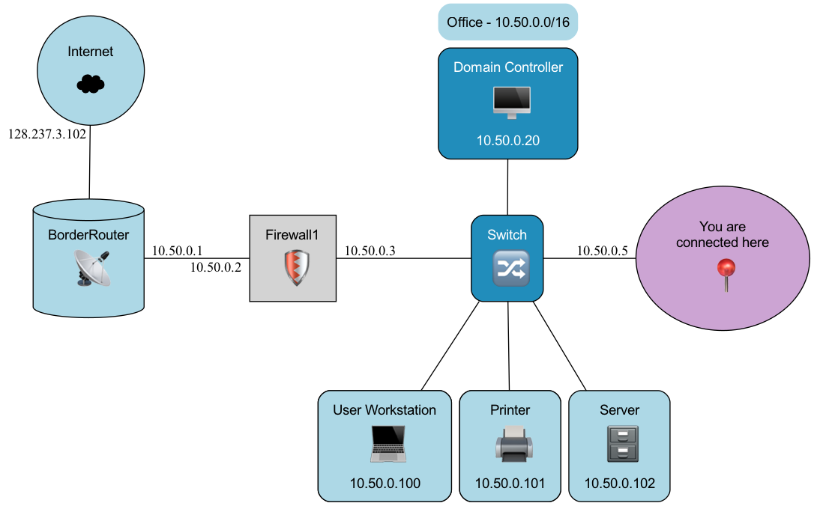

What is this Pre-Test for?
This quiz aims to assess our course content, NOT you personally.
There's NO need to worry about getting questions wrong. If you encounter unfamiliar or challenging questions,
please select the "I do not know" option instead of guessing the answer. Your honest response is invaluable to us as we refine the course.
For the following questions (Q1-Q4), you are given the Network address in CIDR notation of 192.18.0.0/16
Question #1
What is the Network IP address?
Question #2
What is the prefix length?
Question #3
What is the broadcast address?
Question #4
What is the binary representation of 192.18.0.0?
For the following questions (Q5-Q7), you are given:
Network Address: 172.0.0.0
Broadcast Address: 172.0.255.255
Question #5
What is the first assignable IP address?
Question #6
Is 172.0.200.5 an assignable address within this subnet?
Question #7
Which IP address is outside the assignable host range?
Question #8
Which subnet mask corresponds to a prefix length of /12?
Question #9
Which prefix length corresponds to a subnet mask of 255.255.192.0?
Question #10
Looking at the following network map (click to enlarge), what is the default gateway for internal devices on this floor to ensure consistent routing?

After you answered all the quiz questions, please check the "Done" button below to proceed to the learning activity.